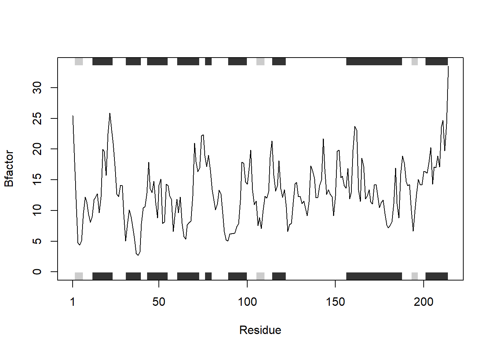

library(bio3d)
#must load `bio3d`otherwise you cannot access the data on an empty Rstudio tabHW6
N.B. Homework with scoring rubric.
Q6. How would you generalize the original code above to work with any set of input protein structures?
Original Code to use for analysis
protein.and.drug.analysis <- function(protein.list) {
for (x in protein.list) {
#read the pdb and shortcut it
pdb <-read.pdb(x)
# search for the specifications
s1.chainA <- trim.pdb(pdb, chain = "A", elety = "CA")
s1.b <- s1.chainA$atom$b
#plot
plotb3(s1.b, sse = s1.chainA, type = "l", ylab = "Bfactor")
}
}
#need to set x for the sources
x <- c("4AKE", "1AKE", "1E4Y")
#display the function
protein.and.drug.analysis(x) Note: Accessing on-line PDB file
Note: Accessing on-line PDB file
PDB has ALT records, taking A only, rm.alt=TRUE
Note: Accessing on-line PDB file
What the function does and how to use it.
The function reads through a list of protein codes, pulling their pdb files and stores them in the new variable “pdb”. We trim the data for the data we want to analyze using the trim.pdb() function to pull data for an Alpha Chain of a protein and store in “s1.chainA”. We filter for B factors in the atom column of the data. The plot is generated for B-Factor (atomic mobility) vs the residues of a protein structure with/without a drug.
What is the output of the function.
The output of the function is a plot of B-factor vs protein alpha chain residues of all the proteins in the list of proteins that matches the specifications we called for.
Comments on what are the inputs to the function.
The input of this function are protein data bank (pdb) structures of a protein either with or without a drug.